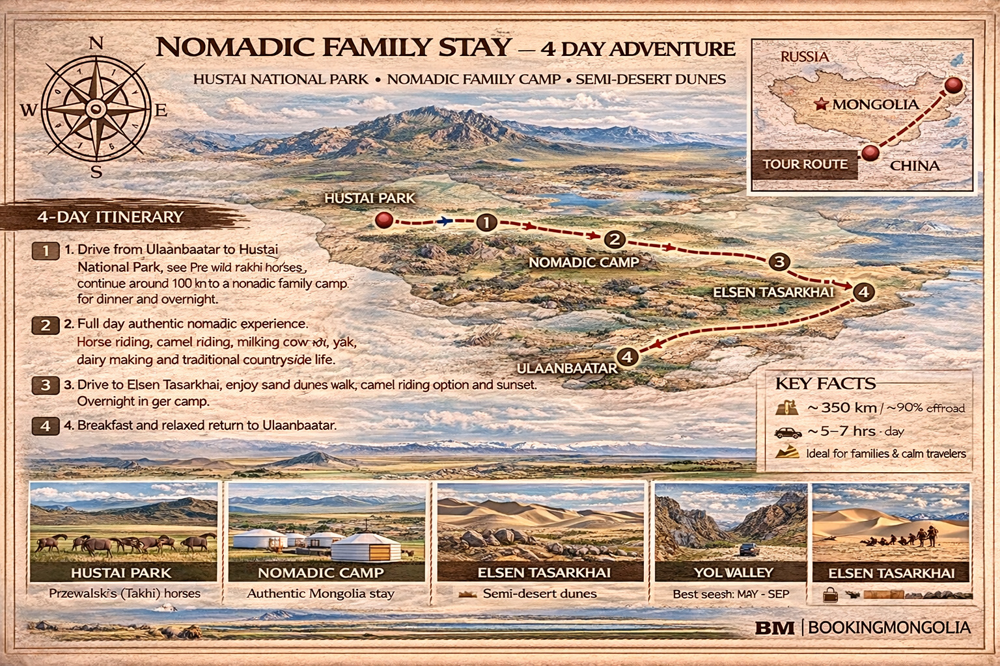

真实游牧生活 4 日（胡斯泰 + 额尔森塔萨尔海）
路线：乌兰巴托 → 胡斯泰国家公园 → 游牧家庭 → 额尔森塔萨尔海 → 乌兰巴托
从乌兰巴托：公路 + 家庭过夜。建议节奏：2–6 人。
1 人$380
2 人$290
3 人$260
4 人$240
以上为每人参考价（美元），不含国际机票。旺季营地与车辆可能调整。
亮点
- 胡斯泰野马
- 游牧家庭
- 骑马与骆驼
- 额尔森塔萨尔海

参考行程
第 1 天
去胡斯泰看塔克希野马，再约 100 公里到游牧家庭晚餐过夜。
第 2 天
完整游牧日：骑马、骆驼、挤奶、奶制品与田园生活，家庭过夜。
第 3 天
前往额尔森塔萨尔海，走沙丘、可选骆驼、看日落，蒙古包过夜。
第 4 天
早餐后从容返回，可按要求加停哈拉和林。
住宿等级
包含
- 司机交通
- 游牧家庭 2 晚
- 额尔森塔萨尔海蒙古包 1 晚
- 骑马与骆驼
- 部分游牧活动与餐食
这不是豪华团，而是真实乡下体验，适合要文化不要只观光的客人。
微信咨询此线路